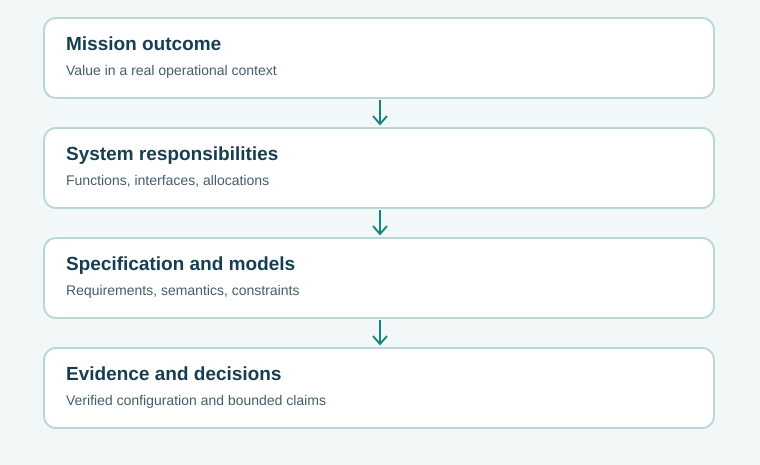

T01 · Foundations
System boundaries, outcomes, and emergence
Decide what the engineered system is accountable for, and what remains outside its authority.
A connected textbook reference for systems engineering. Build intuition, follow mathematical reasoning, test assumptions, and bring the ideas back to your course projects.
Advanced architecture, modeling and assurance
Each chapter develops an engineering idea through an operational example, assumptions, a worked calculation or decision, and a practice task. Use the reading paths to build prerequisites; jump to a specific topic whenever a course assignment calls for it.
Decide what the engineered system is accountable for, and what remains outside its authority.
Turn stakeholder needs into bounded, falsifiable obligations and credible evidence chains.
Separate functional responsibilities from physical choices, and reason about the interfaces that join them.
Know which claims a model can support and how its meaning survives revisions.
Explain why correct local code may yield incorrect system behavior when messages and time intervene.
Distinguish uncertainty about outcomes from uncertainty about models and assumptions.
Understand why variability and utilization make response times nonlinear.
Connect feedback-loop stories to reproducible models with units and stability conditions.
Reason from failure pathways to layered controls, while acknowledging common causes.
Defend architecture choices without hiding feasibility constraints or stakeholder preferences.
Make the connection between models, tests, and decisions trustworthy across tools and revisions.
Understand why mission outcomes depend on independently governed constituents and human incentives.
Build a safety argument from unsafe control actions, causal scenarios, controls, and residual uncertainty.
Model the joint human–automation system, alarm workload, cognitive bias, and authority handoff.
Connect assets, adversary actions, architecture controls, detection, and test evidence.
Build factorial experiments, control confounding, estimate interactions, and plan meaningful decisions.
Connect failure processes, repair queues, spare parts, common causes, and mission continuity.
Compare alternatives across constraints, uncertainty sets, Pareto fronts, and regret.
Distinguish correct code from a credible model and trace uncertainty from inputs to decisions.
Turn architecture choices into transparent cost, discounting, and option-value arguments.

Each concept chapter is linked to related companion books and a small practice lab. The concept chapters explain the theory; the original course curriculum remains the authority for assessed deliverables.
These lightweight controls reproduce the teaching formulas in the selected chapters. They are not substitutes for executing the included Python files or validating a real system.
Read the source below, download the files, and run locally with Python 3 (standard library only). These programs deliberately model simplified teaching cases.
"""One-sided upper Clopper-Pearson bound after zero failures. Teaching example."""
import math
def upper_zero_failures(n: int, confidence: float = 0.95) -> float:
if type(n) is not int or n < 1: raise ValueError('n must be a positive integer')
if not (0.0 < confidence < 1.0): raise ValueError('confidence must be in (0, 1)')
return -math.expm1(math.log1p(-confidence) / n)
if __name__ == '__main__':
for n in (30,100,300): print(n, f'{upper_zero_failures(n)*100:.3f}%')
"""M/M/1 ideal steady-state; do not apply to arbitrary fleet routes."""
def mm1(arrivals_per_hour: float, service_per_hour: float) -> dict:
if arrivals_per_hour < 0 or service_per_hour <= 0: raise ValueError('invalid rate')
if arrivals_per_hour >= service_per_hour: raise ValueError('stationary mean undefined')
w = 1/(service_per_hour-arrivals_per_hour)
return {'utilization': arrivals_per_hour/service_per_hour,
'hours_in_system': w, 'mean_in_system': arrivals_per_hour*w}
if __name__ == '__main__':
for rate in (6,8,9): print(rate,mm1(rate,10))
"""Weighted utilities and switch points for a two-criterion comparison."""
def score(rel: float, cost: float, reliability_weight: float) -> float:
if not 0 <= reliability_weight <= 1: raise ValueError('weight outside [0,1]')
return reliability_weight*rel+(1-reliability_weight)*cost
def compare(w: float) -> tuple:
return score(.8,.4,w),score(.6,.9,w)
if __name__ == '__main__':
for w in (.4,.6,5/7,.9): print(w,compare(w))
"""First-order recovery: Euler trajectory and exact solution for comparison."""
import math
def euler(x0: float, k: float, dt: float, steps: int) -> list:
if k < 0 or dt <= 0 or type(steps) is not int or steps < 0: raise ValueError('bad inputs')
values=[x0]
for _ in range(steps): values.append(values[-1]*(1-k*dt))
return values
def exact(x0: float, k: float, time: float) -> float:
return x0*math.exp(-k*time)
if __name__ == '__main__':
print('Euler:',euler(10,.5,1,5),'Exact t=1:',exact(10,.5,1))
The files below are fully editable, and the laboratory source is included in the complete library. Review assumptions before using any model in an engineering decision.
hazard_checks.py · Download Python
clearance.py · Download Python
factorial.py · Download Python
reliability.py · Download Python
Download topic catalog (JSON) · Download automated test file · Availability CSV · Tradeoffs CSV · Traceability CSV